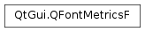

QFontMetricsF¶
Synopsis¶
Functions¶
- def
__eq__(other) - def
__ne__(other) - def
ascent() - def
averageCharWidth() - def
boundingRect(r, flags, string[, tabstops=0[, tabarray=nullptr]]) - def
boundingRect(string) - def
boundingRectChar(arg__1) - def
capHeight() - def
descent() - def
elidedText(text, mode, width[, flags=0]) - def
height() - def
horizontalAdvance(arg__1) - def
horizontalAdvance(string[, length=-1]) - def
inFont(arg__1) - def
inFontUcs4(ucs4) - def
leading() - def
leftBearing(arg__1) - def
lineSpacing() - def
lineWidth() - def
maxWidth() - def
minLeftBearing() - def
minRightBearing() - def
operator=(arg__1) - def
overlinePos() - def
rightBearing(arg__1) - def
size(flags, str[, tabstops=0[, tabarray=nullptr]]) - def
strikeOutPos() - def
swap(other) - def
tightBoundingRect(text) - def
underlinePos() - def
width(string) - def
widthChar(arg__1) - def
xHeight()
Detailed Description¶
The
PySide2.QtGui.QFontMetricsFclass provides font metrics information.
PySide2.QtGui.QFontMetricsFfunctions calculate the size of characters and strings for a given font. You can construct aPySide2.QtGui.QFontMetricsFobject with an existingPySide2.QtGui.QFontto obtain metrics for that font. If the font is changed later, the font metrics object is not updated.Once created, the object provides functions to access the individual metrics of the font, its characters, and for strings rendered in the font.
There are several functions that operate on the font:
PySide2.QtGui.QFontMetricsF.ascent(),PySide2.QtGui.QFontMetricsF.descent(),PySide2.QtGui.QFontMetricsF.height(),PySide2.QtGui.QFontMetricsF.leading()andPySide2.QtGui.QFontMetricsF.lineSpacing()return the basic size properties of the font. ThePySide2.QtGui.QFontMetricsF.underlinePos(),PySide2.QtGui.QFontMetricsF.overlinePos(),PySide2.QtGui.QFontMetricsF.strikeOutPos()andPySide2.QtGui.QFontMetricsF.lineWidth()functions, return the properties of the line that underlines, overlines or strikes out the characters. These functions are all fast.There are also some functions that operate on the set of glyphs in the font:
PySide2.QtGui.QFontMetricsF.minLeftBearing(),PySide2.QtGui.QFontMetricsF.minRightBearing()andPySide2.QtGui.QFontMetricsF.maxWidth(). These are by necessity slow, and we recommend avoiding them if possible.For each character, you can get its
PySide2.QtGui.QFontMetricsF.width(),PySide2.QtGui.QFontMetricsF.leftBearing()andPySide2.QtGui.QFontMetricsF.rightBearing()and find out whether it is in the font usingPySide2.QtGui.QFontMetricsF.inFont(). You can also treat the character as a string, and use the string functions on it.The string functions include
PySide2.QtGui.QFontMetricsF.width(), to return the width of a string in pixels (or points, for a printer),PySide2.QtGui.QFontMetricsF.boundingRect(), to return a rectangle large enough to contain the rendered string, andPySide2.QtGui.QFontMetricsF.size(), to return the size of that rectangle.Example:
font = QFont("times", 24) fm = QFontMetricsF(font) pixelsWide = fm.width("What's the width of this text?") pixelsHigh = fm.height()
-
class
PySide2.QtGui.QFontMetricsF(arg__1)¶ -
class
PySide2.QtGui.QFontMetricsF(arg__1, pd) -
class
PySide2.QtGui.QFontMetricsF(arg__1) -
class
PySide2.QtGui.QFontMetricsF(arg__1) Parameters: - pd –
PySide2.QtGui.QPaintDevice - arg__1 –
PySide2.QtGui.QFont
Constructs a font metrics object for
font.The font metrics will be compatible with the paintdevice used to create
font.The font metrics object holds the information for the font that is passed in the constructor at the time it is created, and is not updated if the font’s attributes are changed later.
Use
PySide2.QtGui.QFontMetricsF(constPySide2.QtGui.QFont&,PySide2.QtGui.QPaintDevice*) to get the font metrics that are compatible with a certain paint device.Constructs a font metrics object for
fontandpaintdevice.The font metrics will be compatible with the paintdevice passed. If the
paintdeviceis 0, the metrics will be screen-compatible, ie. the metrics you get if you use the font for drawing text on awidgetsorpixmaps, not on aPySide2.QtGui.QPictureorPySide2.QtPrintSupport.QPrinter.The font metrics object holds the information for the font that is passed in the constructor at the time it is created, and is not updated if the font’s attributes are changed later.
Constructs a font metrics object with floating point precision from the given
fontMetricsobject.Constructs a copy of
fm.- pd –
-
PySide2.QtGui.QFontMetricsF.ascent()¶ Return type: PySide2.QtCore.qrealReturns the ascent of the font.
The ascent of a font is the distance from the baseline to the highest position characters extend to. In practice, some font designers break this rule, e.g. when they put more than one accent on top of a character, or to accommodate an unusual character in an exotic language, so it is possible (though rare) that this value will be too small.
-
PySide2.QtGui.QFontMetricsF.averageCharWidth()¶ Return type: PySide2.QtCore.qrealReturns the average width of glyphs in the font.
-
PySide2.QtGui.QFontMetricsF.boundingRect(string)¶ Parameters: string – unicode Return type: PySide2.QtCore.QRectFReturns the bounding rectangle of the characters in the string specified by
text. The bounding rectangle always covers at least the set of pixels the text would cover if drawn at (0, 0).Note that the bounding rectangle may extend to the left of (0, 0), e.g. for italicized fonts, and that the width of the returned rectangle might be different than what the
PySide2.QtGui.QFontMetricsF.width()method returns.If you want to know the advance width of the string (to lay out a set of strings next to each other), use
PySide2.QtGui.QFontMetricsF.horizontalAdvance()instead.Newline characters are processed as normal characters, not as linebreaks.
The height of the bounding rectangle is at least as large as the value returned
PySide2.QtGui.QFontMetricsF.height().
-
PySide2.QtGui.QFontMetricsF.boundingRect(r, flags, string[, tabstops=0[, tabarray=nullptr]]) Parameters: - r –
PySide2.QtCore.QRectF - flags –
PySide2.QtCore.int - string – unicode
- tabstops –
PySide2.QtCore.int - tabarray –
PySide2.QtCore.int
Return type: This is an overloaded function.
Returns the bounding rectangle of the characters in the given
text. This is the set of pixels the text would cover if drawn when constrained to the bounding rectangle specified byrect.The
flagsargument is the bitwise OR of the following flags:Qt.AlignLeftaligns to the left border, except for Arabic and Hebrew where it aligns to the right.Qt.AlignRightaligns to the right border, except for Arabic and Hebrew where it aligns to the left.Qt.AlignJustifyproduces justified text.Qt.AlignHCenteraligns horizontally centered.Qt.AlignTopaligns to the top border.Qt.AlignBottomaligns to the bottom border.Qt.AlignVCenteraligns vertically centeredQt.AlignCenter(==Qt::AlignHCenter | Qt::AlignVCenter)Qt.TextSingleLineignores newline characters in the text.Qt.TextExpandTabsexpands tabs (see below)Qt.TextShowMnemonicinterprets “&x” as x; i.e., underlined.Qt.TextWordWrapbreaks the text to fit the rectangle.
Qt.Horizontalalignment defaults toQt.AlignLeftand vertical alignment defaults toQt.AlignTop.If several of the horizontal or several of the vertical alignment flags are set, the resulting alignment is undefined.
These flags are defined in
Qt.AlignmentFlag.If
Qt.TextExpandTabsis set inflags, the following behavior is used to interpret tab characters in the text:- If
tabArrayis non-null, it specifies a 0-terminated sequence of pixel-positions for tabs in the text. - If
tabStopsis non-zero, it is used as the tab spacing (in pixels).
Note that the bounding rectangle may extend to the left of (0, 0), e.g. for italicized fonts.
Newline characters are processed as line breaks.
Despite the different actual character heights, the heights of the bounding rectangles of “Yes” and “yes” are the same.
The bounding rectangle returned by this function is somewhat larger than that calculated by the simpler
PySide2.QtGui.QFontMetricsF.boundingRect()function. This function uses themaximum leftandrightfont bearings as is necessary for multi-line text to align correctly. Also, fontHeight() andPySide2.QtGui.QFontMetricsF.lineSpacing()are used to calculate the height, rather than individual character heights.See also
PySide2.QtGui.QFontMetricsF.width()QPainter.boundingRect()Qt.Alignment- r –
-
PySide2.QtGui.QFontMetricsF.boundingRectChar(arg__1)¶ Parameters: arg__1 – PySide2.QtCore.QCharReturn type: PySide2.QtCore.QRectFReturns the bounding rectangle of the character
chrelative to the left-most point on the base line.Note that the bounding rectangle may extend to the left of (0, 0), e.g. for italicized fonts, and that the text output may cover all pixels in the bounding rectangle.
Note that the rectangle usually extends both above and below the base line.
See also
-
PySide2.QtGui.QFontMetricsF.capHeight()¶ Return type: PySide2.QtCore.qrealReturns the cap height of the font.
The cap height of a font is the height of a capital letter above the baseline. It specifically is the height of capital letters that are flat - such as H or I - as opposed to round letters such as O, or pointed letters like A, both of which may display overshoot.
See also
-
PySide2.QtGui.QFontMetricsF.descent()¶ Return type: PySide2.QtCore.qrealReturns the descent of the font.
The descent is the distance from the base line to the lowest point characters extend to. (Note that this is different from X, which adds 1 pixel.) In practice, some font designers break this rule, e.g. to accommodate an unusual character in an exotic language, so it is possible (though rare) that this value will be too small.
See also
-
PySide2.QtGui.QFontMetricsF.elidedText(text, mode, width[, flags=0])¶ Parameters: - text – unicode
- mode –
PySide2.QtCore.Qt.TextElideMode - width –
PySide2.QtCore.qreal - flags –
PySide2.QtCore.int
Return type: unicode
If the string
textis wider thanwidth, returns an elided version of the string (i.e., a string with “…” in it). Otherwise, returns the original string.The
modeparameter specifies whether the text is elided on the left (for example, “…tech”), in the middle (for example, “Tr…ch”), or on the right (for example, “Trol…”).The
widthis specified in pixels, not characters.The
flagsargument is optional and currently only supportsQt.TextShowMnemonicas value.The elide mark follows the
layoutdirection. For example, it will be on the right side of the text for right-to-left layouts if themodeisQt::ElideLeft, and on the left side of the text if themodeisQt::ElideRight.
-
PySide2.QtGui.QFontMetricsF.height()¶ Return type: PySide2.QtCore.qrealReturns the height of the font.
This is always equal to
PySide2.QtGui.QFontMetricsF.ascent()+PySide2.QtGui.QFontMetricsF.descent().
-
PySide2.QtGui.QFontMetricsF.horizontalAdvance(string[, length=-1])¶ Parameters: - string – unicode
- length –
PySide2.QtCore.int
Return type: PySide2.QtCore.qrealReturns the horizontal advance in pixels of the first
lengthcharacters oftext. Iflengthis negative (the default), the entire string is used.The advance is the distance appropriate for drawing a subsequent character after
text.
-
PySide2.QtGui.QFontMetricsF.horizontalAdvance(arg__1) Parameters: arg__1 – PySide2.QtCore.QCharReturn type: PySide2.QtCore.qrealThis is an overloaded function.

Returns the horizontal advance of character
chin pixels. This is a distance appropriate for drawing a subsequent character afterch.Some of the metrics are described in the image to the right. The central dark rectangles cover the logical
PySide2.QtGui.QFontMetricsF.width()of each character. The outer pale rectangles cover thePySide2.QtGui.QFontMetricsF.leftBearing()andPySide2.QtGui.QFontMetricsF.rightBearing()of each character. Notice that the bearings of “f” in this particular font are both negative, while the bearings of “o” are both positive.Warning
This function will produce incorrect results for Arabic characters or non-spacing marks in the middle of a string, as the glyph shaping and positioning of marks that happens when processing strings cannot be taken into account. When implementing an interactive text control, use
PySide2.QtGui.QTextLayoutinstead.
-
PySide2.QtGui.QFontMetricsF.inFont(arg__1)¶ Parameters: arg__1 – PySide2.QtCore.QCharReturn type: PySide2.QtCore.boolReturns
trueif characterchis a valid character in the font; otherwise returnsfalse.
-
PySide2.QtGui.QFontMetricsF.inFontUcs4(ucs4)¶ Parameters: ucs4 – PySide2.QtCore.uintReturn type: PySide2.QtCore.boolReturns
trueif the character given bych, encoded in UCS-4/UTF-32, is a valid character in the font; otherwise returnsfalse.
-
PySide2.QtGui.QFontMetricsF.leading()¶ Return type: PySide2.QtCore.qrealReturns the leading of the font.
This is the natural inter-line spacing.
-
PySide2.QtGui.QFontMetricsF.leftBearing(arg__1)¶ Parameters: arg__1 – PySide2.QtCore.QCharReturn type: PySide2.QtCore.qrealReturns the left bearing of character
chin the font.The left bearing is the right-ward distance of the left-most pixel of the character from the logical origin of the character. This value is negative if the pixels of the character extend to the left of the logical origin.
See
PySide2.QtGui.QFontMetricsF.width()for a graphical description of this metric.
-
PySide2.QtGui.QFontMetricsF.lineSpacing()¶ Return type: PySide2.QtCore.qrealReturns the distance from one base line to the next.
This value is always equal to
PySide2.QtGui.QFontMetricsF.leading()+PySide2.QtGui.QFontMetricsF.height().
-
PySide2.QtGui.QFontMetricsF.lineWidth()¶ Return type: PySide2.QtCore.qrealReturns the width of the underline and strikeout lines, adjusted for the point size of the font.
-
PySide2.QtGui.QFontMetricsF.maxWidth()¶ Return type: PySide2.QtCore.qrealReturns the width of the widest character in the font.
-
PySide2.QtGui.QFontMetricsF.minLeftBearing()¶ Return type: PySide2.QtCore.qrealReturns the minimum left bearing of the font.
This is the smallest
PySide2.QtGui.QFontMetricsF.leftBearing()(char) of all characters in the font.Note that this function can be very slow if the font is large.
-
PySide2.QtGui.QFontMetricsF.minRightBearing()¶ Return type: PySide2.QtCore.qrealReturns the minimum right bearing of the font.
This is the smallest
PySide2.QtGui.QFontMetricsF.rightBearing()(char) of all characters in the font.Note that this function can be very slow if the font is large.
-
PySide2.QtGui.QFontMetricsF.__ne__(other)¶ Parameters: other – PySide2.QtGui.QFontMetricsFReturn type: PySide2.QtCore.boolThis is an overloaded function.
Returns
trueif the font metrics are not equal to theotherfont metrics; otherwise returnsfalse.See also
PySide2.QtGui.QFontMetricsF.operator==()
-
PySide2.QtGui.QFontMetricsF.operator=(arg__1) Parameters: arg__1 – PySide2.QtGui.QFontMetricsReturn type: PySide2.QtGui.QFontMetricsFAssigns
otherto this object.
-
PySide2.QtGui.QFontMetricsF.__eq__(other)¶ Parameters: other – PySide2.QtGui.QFontMetricsFReturn type: PySide2.QtCore.boolReturns
trueif the font metrics are equal to theotherfont metrics; otherwise returnsfalse.Two font metrics are considered equal if they were constructed from the same
PySide2.QtGui.QFontand the paint devices they were constructed for are considered to be compatible.
-
PySide2.QtGui.QFontMetricsF.overlinePos()¶ Return type: PySide2.QtCore.qrealReturns the distance from the base line to where an overline should be drawn.
-
PySide2.QtGui.QFontMetricsF.rightBearing(arg__1)¶ Parameters: arg__1 – PySide2.QtCore.QCharReturn type: PySide2.QtCore.qrealReturns the right bearing of character
chin the font.The right bearing is the left-ward distance of the right-most pixel of the character from the logical origin of a subsequent character. This value is negative if the pixels of the character extend to the right of the
PySide2.QtGui.QFontMetricsF.width()of the character.See
PySide2.QtGui.QFontMetricsF.width()for a graphical description of this metric.
-
PySide2.QtGui.QFontMetricsF.size(flags, str[, tabstops=0[, tabarray=nullptr]])¶ Parameters: - flags –
PySide2.QtCore.int - str – unicode
- tabstops –
PySide2.QtCore.int - tabarray –
PySide2.QtCore.int
Return type: Returns the size in pixels of the characters in the given
text.The
flagsargument is the bitwise OR of the following flags:Qt.TextSingleLineignores newline characters.Qt.TextExpandTabsexpands tabs (see below)Qt.TextShowMnemonicinterprets “&x” as x; i.e., underlined.Qt.TextWordWrapbreaks the text to fit the rectangle.
These flags are defined in the
Qt.TextFlagenum.If
Qt.TextExpandTabsis set inflags, the following behavior is used to interpret tab characters in the text:- If
tabArrayis non-null, it specifies a 0-terminated sequence of pixel-positions for tabs in the text. - If
tabStopsis non-zero, it is used as the tab spacing (in pixels).
Newline characters are processed as line breaks.
Note: Despite the different actual character heights, the heights of the bounding rectangles of “Yes” and “yes” are the same.
- flags –
-
PySide2.QtGui.QFontMetricsF.strikeOutPos()¶ Return type: PySide2.QtCore.qrealReturns the distance from the base line to where the strikeout line should be drawn.
-
PySide2.QtGui.QFontMetricsF.swap(other)¶ Parameters: other – PySide2.QtGui.QFontMetricsFSwaps this font metrics instance with
other. This function is very fast and never fails.
-
PySide2.QtGui.QFontMetricsF.tightBoundingRect(text)¶ Parameters: text – unicode Return type: PySide2.QtCore.QRectFReturns a tight bounding rectangle around the characters in the string specified by
text. The bounding rectangle always covers at least the set of pixels the text would cover if drawn at (0, 0).Note that the bounding rectangle may extend to the left of (0, 0), e.g. for italicized fonts, and that the width of the returned rectangle might be different than what the
PySide2.QtGui.QFontMetricsF.width()method returns.If you want to know the advance width of the string (to lay out a set of strings next to each other), use
PySide2.QtGui.QFontMetricsF.horizontalAdvance()instead.Newline characters are processed as normal characters, not as linebreaks.
Warning
Calling this method is very slow on Windows.
-
PySide2.QtGui.QFontMetricsF.underlinePos()¶ Return type: PySide2.QtCore.qrealReturns the distance from the base line to where an underscore should be drawn.
-
PySide2.QtGui.QFontMetricsF.width(string)¶ Parameters: string – unicode Return type: PySide2.QtCore.qrealReturns the width in pixels of the characters in the given
text.Note that this value is not equal to the width returned by
PySide2.QtGui.QFontMetricsF.boundingRect(). becausePySide2.QtGui.QFontMetricsF.boundingRect()returns a rectangle describing the pixels this string will cover whereas returns the distance to where the next string should be drawn.
-
PySide2.QtGui.QFontMetricsF.widthChar(arg__1)¶ Parameters: arg__1 – PySide2.QtCore.QCharReturn type: PySide2.QtCore.qrealThis is an overloaded function.
Returns the logical width of character
chin pixels. This is a distance appropriate for drawing a subsequent character afterch.Some of the metrics are described in the image to the right. The central dark rectangles cover the logical
PySide2.QtGui.QFontMetricsF.width()of each character. The outer pale rectangles cover thePySide2.QtGui.QFontMetricsF.leftBearing()andPySide2.QtGui.QFontMetricsF.rightBearing()of each character. Notice that the bearings of “f” in this particular font are both negative, while the bearings of “o” are both positive.Warning
This function will produce incorrect results for Arabic characters or non-spacing marks in the middle of a string, as the glyph shaping and positioning of marks that happens when processing strings cannot be taken into account. When implementing an interactive text control, use
PySide2.QtGui.QTextLayoutinstead.
-
PySide2.QtGui.QFontMetricsF.xHeight()¶ Return type: PySide2.QtCore.qrealReturns the ‘x’ height of the font. This is often but not always the same as the height of the character ‘x’.
© 2018 The Qt Company Ltd. Documentation contributions included herein are the copyrights of their respective owners. The documentation provided herein is licensed under the terms of the GNU Free Documentation License version 1.3 as published by the Free Software Foundation. Qt and respective logos are trademarks of The Qt Company Ltd. in Finland and/or other countries worldwide. All other trademarks are property of their respective owners.